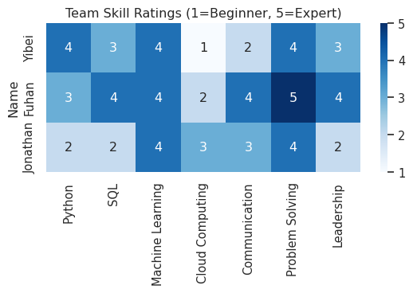
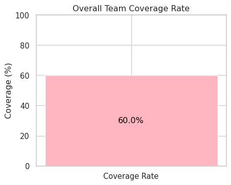

import pandas as pd
import seaborn as sns
sns.set_theme(style="whitegrid")
import matplotlib.pyplot as plt
import os
os.makedirs("figures", exist_ok=True)Skill Gap Analysis
Build Team Skill DataFrame
skills_data = {
"Name": ["Yibei", "Fuhan", "Jonathan"],
"Python": [4, 3, 2],
"SQL": [3, 4, 2],
"Machine Learning": [4, 4, 4],
"Cloud Computing": [1, 2, 3],
"Communication": [2,4,3],
"Problem Solving": [4,5,4],
"Leadership": [3,4,2]
}
df_skills = pd.DataFrame(skills_data).set_index("Name")
df_skills
plt.figure(figsize=(6,4))
sns.heatmap(df_skills, annot=True, cmap="Blues", cbar=True)
plt.title("Team Skill Ratings (1=Beginner, 5=Expert)")
plt.tight_layout()
plt.savefig("figures/team_skill_heatmap.png", dpi=300, bbox_inches="tight")
plt.show()
Extract Top Industry Skills
job_posts = pd.read_csv("data/lightcast_job_postings.csv", low_memory=False)
if "SKILLS_NAME" in job_posts.columns:
all_skills = job_posts["SKILLS_NAME"].dropna().astype(str).str.split(",")
flat_skills = [s.strip().strip('"') for sublist in all_skills for s in sublist]
top_job_skills = pd.Series(flat_skills).value_counts().head(10)
else:
top_job_skills = pd.Series([])
print("Top 10 Industry Skills from Job Postings:")
print(top_job_skills)Top 10 Industry Skills from Job Postings:
Communication 30768
Data Analysis 26797
Management 21274
SQL (Programming Language) 20943
Leadership 17535
Problem Solving 16553
Operations 14684
Project Management 13609
Business Process 13203
Business Requirements 12977
Name: count, dtype: int64Compare Team vs Industry Skills
rename_map = {
"SQL": "SQL (Programming Language)",
"Python": "Data Analysis",
"Machine Learning": "Data Analysis",
"Cloud Computing": "Operations",
"Communication": "Communication",
"Problem Sloving": "Problem Solving",
"leadership": "Leadership"
}
team_skills = set([rename_map.get(c, c) for c in df_skills.columns])
industry_skills = set(top_job_skills.index)
covered_skills = industry_skills & team_skills
missing_skills = industry_skills - team_skills
print("✅ Covered Skills:", covered_skills)
print("⚠️ Missing Skills:", missing_skills)
skill_coverage = pd.DataFrame({
"Skill": list(industry_skills),
"Covered_by_Team": ["Yes" if s in covered_skills else "No" for s in industry_skills]
})
skill_coverage["Covered_Value"] = skill_coverage["Covered_by_Team"].map({"Yes": 1, "No": 0}).astype(int)
skill_coverage["Plot_Value"] = skill_coverage["Covered_Value"].replace(0, 0.01)
plt.figure(figsize=(12,6))
ax = sns.barplot(
data=skill_coverage,
x="Skill",
y="Plot_Value",
hue="Covered_by_Team",
dodge=False,
palette={"Yes":"#4CAF50", "No":"#F08080"}
)
for i, row in skill_coverage.iterrows():
ax.text(i, row["Plot_Value"]+0.05, row["Covered_by_Team"],
ha="center", va="bottom", fontsize=9)
plt.xticks(rotation=45, ha="right")
plt.title("Team Coverage of Top 10 Industry Skills")
plt.ylabel("Covered (1=Yes, 0=No)")
plt.ylim(0,1.3)
plt.tight_layout()
plt.savefig("figures/skill_gap_analysis.png", dpi=300, bbox_inches="tight")
plt.show()
coverage_rate = len(covered_skills) / len(industry_skills) * 100
plt.figure(figsize=(5,4))
plt.bar(["Coverage Rate"], [coverage_rate], color="#FFB6C1")
plt.ylabel("Coverage (%)")
plt.ylim(0,100)
plt.title("Overall Team Coverage Rate")
plt.text(0, coverage_rate/2, f"{coverage_rate:.1f}%",
ha="center", va="center", fontsize=12, color="black")
plt.savefig("figures/coverage_rate.png", dpi=300, bbox_inches="tight")
plt.show()
mapping_table = pd.DataFrame({
"Team Skill": df_skills.columns,
"Mapped Industry Skill": [rename_map.get(c, c) for c in df_skills.columns],
"In Top 10": ["Yes" if rename_map.get(c, c) in industry_skills else "No" for c in df_skills.columns]
})
display(mapping_table)✅ Covered Skills: {'Communication', 'SQL (Programming Language)', 'Data Analysis', 'Leadership', 'Operations', 'Problem Solving'}
⚠️ Missing Skills: {'Management', 'Project Management', 'Business Process', 'Business Requirements'}

| Team Skill | Mapped Industry Skill | In Top 10 | |
|---|---|---|---|
| 0 | Python | Data Analysis | Yes |
| 1 | SQL | SQL (Programming Language) | Yes |
| 2 | Machine Learning | Data Analysis | Yes |
| 3 | Cloud Computing | Operations | Yes |
| 4 | Communication | Communication | Yes |
| 5 | Problem Solving | Problem Solving | Yes |
| 6 | Leadership | Leadership | Yes |
Results and Improvement Plan Our team analyzed and compared their self-assessed skills scores with the top ten most in-demand industry skills extracted from job postings. The results showed strong coverage across technical areas, particularly in data analytics, SQL, and operations, with Python, programming languages, and cloud computing as the foundation. These skills align closely with market demand and position the team well for data-centric and technical roles.
However, the analysis also revealed significant shortcomings. The team lacked formal expertise in project management, business needs, and leadership. While corporate HR departments consistently emphasize these areas as crucial for roles bridging technology and business, particularly in managing teams or translating technology solutions into business value, our overall coverage was 60%, highlighting significant room for improvement.
Improvement Plan While our team has certain strengths in technical skills like data analysis, SQL, and cloud computing, a comparison with industry requirements reveals significant shortcomings. Project management, business needs analysis, and communication are particularly important skills that recruiters value most, yet they are currently largely absent within our team. Therefore, if we aspire to take on more comprehensive roles in the future, relying solely on technical proficiency will not be enough.
To address our shortcomings, we need to proactively develop these soft skills. For example, in class group assignments, we can try creating a project coordination role to hone project management and communication skills through practical experience. Outside of class, we can leverage BU resources to participate in projects and courses related to Project Management and Business Process Management to enhance these skills. Leadership is also a weakness worth addressing. While each of us has demonstrated organizational skills to varying degrees, our overall level is still insufficient. This can be developed through rotating leadership roles within the group.
In the long run, we must not only maintain our edge in data analysis and technology but also gradually build a comprehensive capability structure that encompasses both software and hardware. This will allow us to secure the jobs we desire in a highly competitive job market. Furthermore, we will be able to not only produce technical achievements at work but also drive projects to fruition.